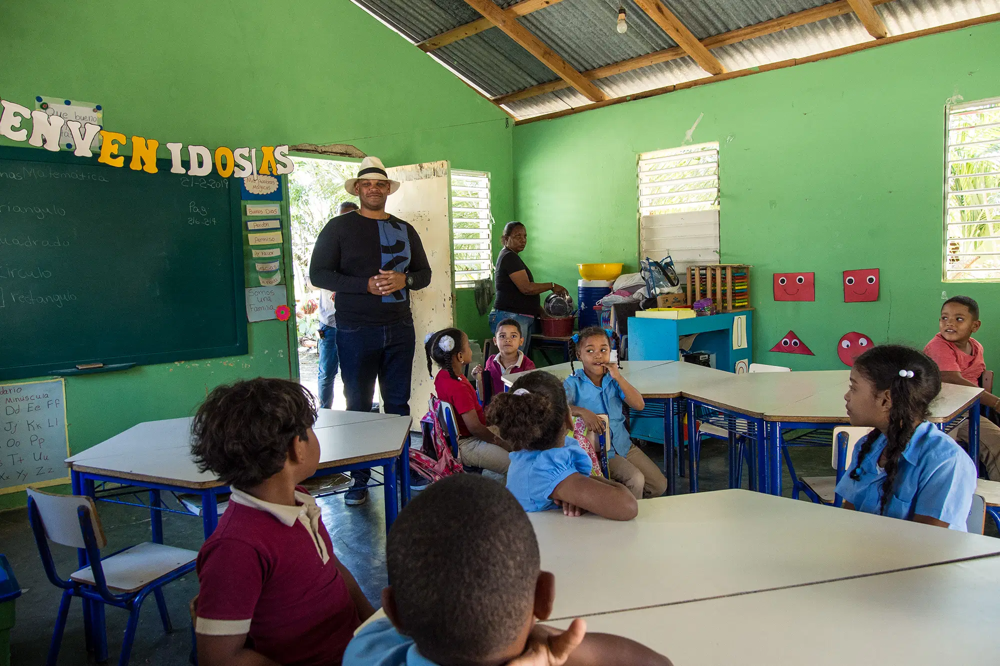
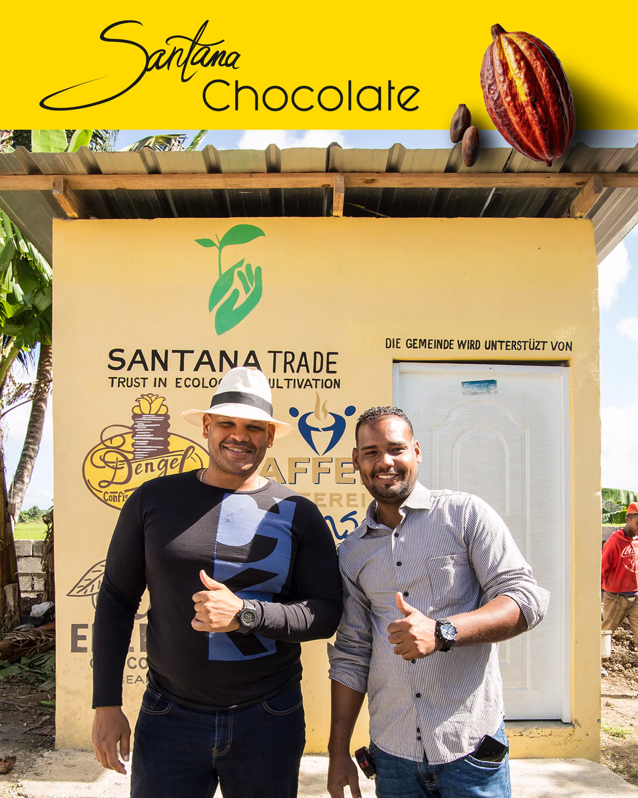
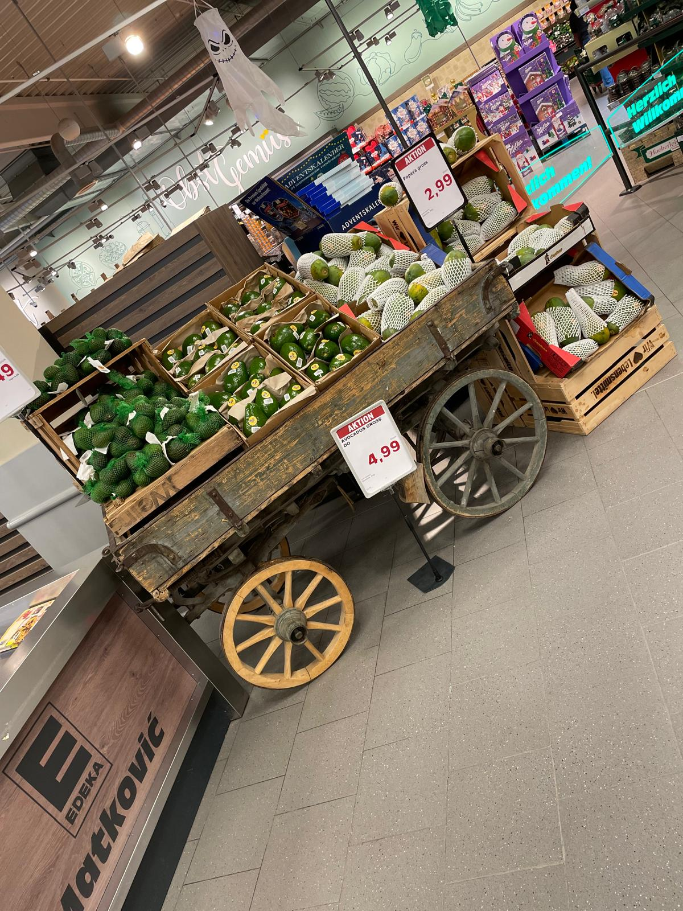
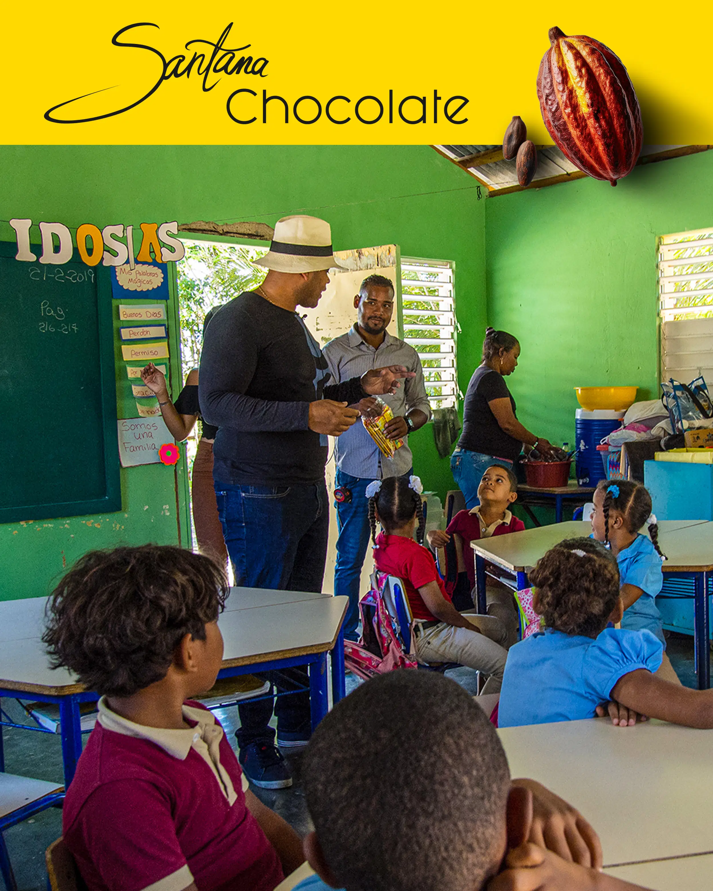

Der Weg eines Unternehmers ist selten eine gerade Linie. Nach meiner Zeit bei Saturn öffnete sich eine neue Tür: MediaMarkt Esslingen. Ich wurde Bereichsleiter. Zum ersten Mal ging es nicht mehr nur um meine Verkaufsziele, sondern darum, ob ein ganzes Team funktioniert.
Wer den Einzelhandel kennt, weiß: Es ist ein schnelles Geschäft. In Esslingen trug ich plötzlich Verantwortung für eine zweistellige Anzahl an Mitarbeitern. Ich lernte schnell: Operative Exzellenz ist nur möglich, wenn die Führung stimmt.
Diese Balance zwischen "Hands-on" auf der Fläche und strategischem Management war meine erste große Lektion. Bei Santana Fruits wenden wir heute genau diese Prinzipien an – egal ob im Labor oder in der Logistik.

In Esslingen wurde mir klar: Führung bedeutet Dienstleistung. Ich war dafür verantwortlich, dass mein Team alles hatte, um erfolgreich zu sein. Wir bei Santana Fruits sitzen heute nicht nur in Büros; wir sind direkt auf den Plantagen und sprechen mit den Farmern auf Augenhöhe.
Erfolg im Handel ist kein Zufall. Er ist das Ergebnis von präziser Analyse und mutiger Umsetzung. Wenn ich heute über unsere Importstrategien entscheide, greife ich auf diese Erfahrungen zurück. Wir wissen, wann der Markt welche Qualität benötigt.

Niemand baut ein Imperium alleine auf. In Esslingen lernte ich, Talente zu fördern. Dieses Prinzip wenden wir auch in der Dominikanischen Republik an. Wir unterstützen lokale Gemeinschaften und verstehen uns als die "Santana Family".

Meine Zeit in Esslingen war die Reifeprüfung. Ich war bereit für meine eigene Vision von Qualität und Handel – eine Vision, die zurück zu meinen Wurzeln führte. Aber bevor Santana Fruits Realität wurde, gab es eine schicksalhafte Begegnung mit einem Mann, der mein Potenzial sah: Andreas Stachorski. Dazu mehr im nächsten Teil.
Bis bald,
Kenny
CEO, Santana Fruits